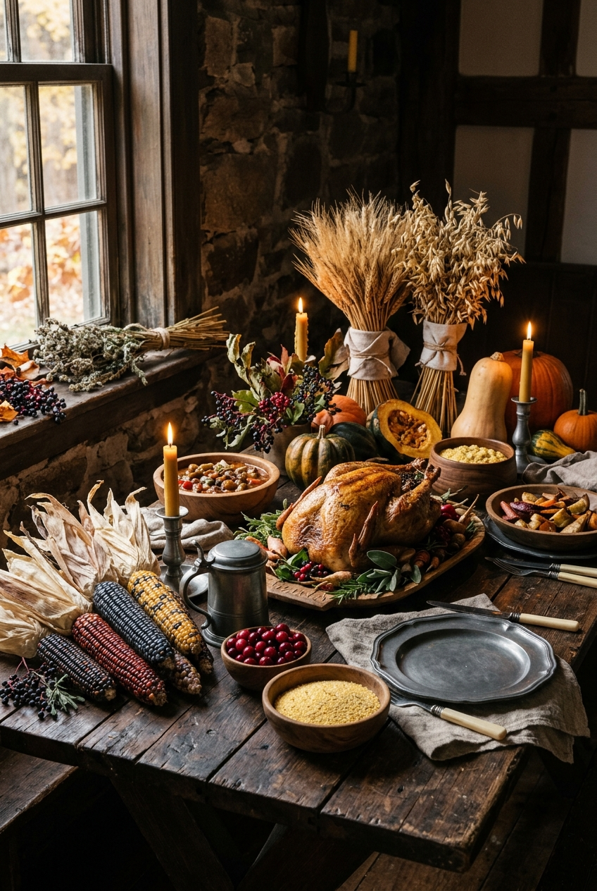
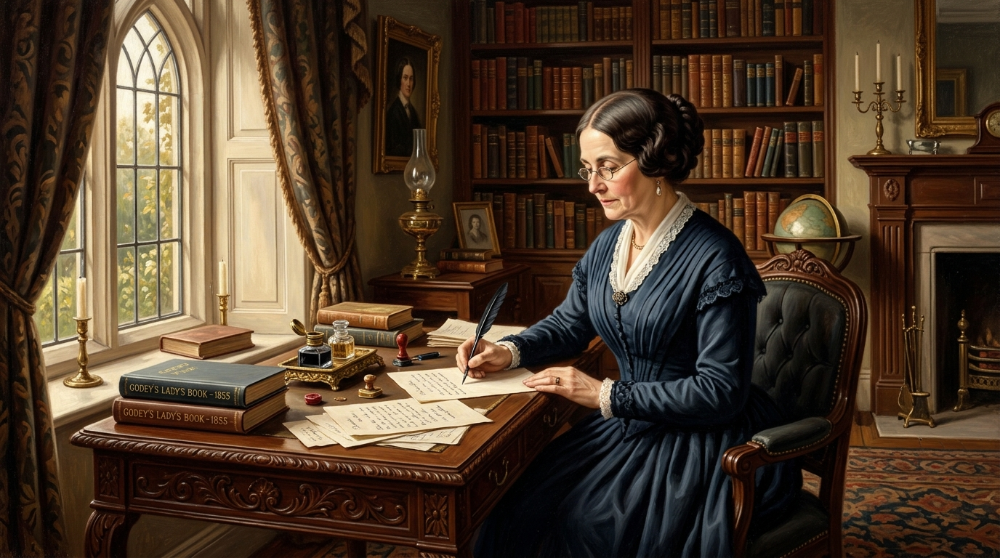
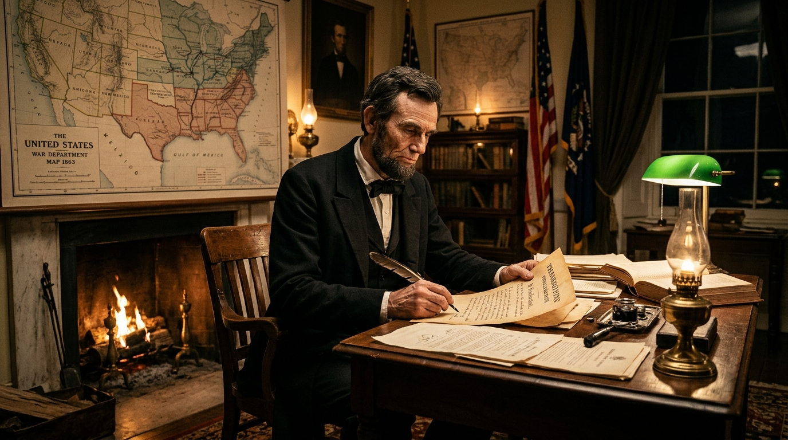

The storybook version taught in school—that the Pilgrims hosted a peaceful annual dinner that directly started our modern holiday—is a 19th-century romanticized creation. The real Thanksgiving was born out of a localized 3-day survival harvest in 1621, resurrected through a persistent 36-year woman-led editorial campaign, and officially nationalized by Abraham Lincoln in 1863 to foster national unity during the American Civil War.
- The 1621 gathering was a one-time 3-day harvest feast, not an annual tradition
- The menu centered on venison, wild fowl, corn, and shellfish—no pies, ovens, or cranberry sauce
- Sarah Josepha Hale wrote hundreds of letters over 36 years to establish a unified holiday
- Lincoln signed the 1863 Proclamation during the Civil War to heal a fractured nation
- Myth: Pilgrims wore buckles on their hats and black outfits (they wore colorful clothing)
- Myth: Turkey was the undisputed centerpiece of the 1621 table
- Myth: The gathering led to lasting peace (relations collapsed into devastating wars)
- Myth: The date was always the fourth Thursday (FDR moved it in 1939, causing uproar)
🦃 What Is the Real Origin of Thanksgiving?
Direct Answer (Bottom Line Up Front): Thanksgiving as an official annual national holiday was created not in 1621, but in 1863 by President Abraham Lincoln during the American Civil War, following a 36-year crusade by magazine editor Sarah Josepha Hale. The famous 1621 gathering at Plymouth, Massachusetts, was an impromptu, three-day harvest feast shared by 53 English colonists and roughly 90 Wampanoag allies. It was not called "Thanksgiving" at the time, was not repeated annually, and bore little resemblance to the modern holiday menu.

📌 Save Look📑 In This Historical Investigation • Jump Links
🔬 Primary Source Verification & Historiography
To ensure strict factual fidelity, this guide examines only contemporaneous 17th-century texts and official government archives:
- Edward Winslow (1621): In Mourt’s Relation, Winslow penned the only first-hand eyewitness account of the 1621 feast, noting that Massasoit and 90 men attended and provided five deer.
- William Bradford (1620–1647): The Plymouth governor's journal Of Plymouth Plantation detailed the wild fowl and corn harvest that sustained the colony after a deadly winter.
- Godey’s Lady’s Book (1827–1863): Sarah Josepha Hale’s public editorials and personal correspondence with Presidents Taylor, Fillmore, Pierce, Buchanan, and Lincoln.
🌽 The "First" Thanksgiving: The 1621 Plymouth Gathering
In the autumn of 1621, the English colonists at Plymouth, Massachusetts, shared a three-day harvest feast with the Wampanoag people. The Pilgrims were celebrating their first successful corn harvest, largely made possible because the Wampanoag—led by Tisquantum (popularly known as Squanto)—had taught them how to cultivate native crops, tap maple trees, and fish the local coastal waters.
The previous winter of 1620–1621 had been catastrophic for the Mayflower passengers. Out of roughly 102 original colonists, nearly half perished from scurvy, exposure, and infectious disease. By autumn 1621, only 53 English survivors remained, including only four adult women. When their seven-acre field of native flint corn yielded an abundant harvest, Governor William Bradford sent four men on a "fowling" mission so the community could celebrate.
Hearing musket fire from the fowling expedition, Wampanoag leader Massasoit (Ousamequin) and approximately 90 warriors arrived at the settlement, initially suspecting hostility. Recognizing it was a harvest celebration, the Wampanoag joined the colonists, and Massasoit sent his hunters out, who returned with five deer as an offering. For three continuous days, the two groups feasted, engaged in athletic contests, and fired military volleys together.
"Our harvest being gotten in, our governor sent four men on fowling, that so we might after a special manner rejoice together after we had gathered the fruit of our labors... many of the Indians coming amongst us, and among the rest their greatest king Massasoit, with some ninety men, whom for three days we entertained and feasted."
— Edward Winslow, Mourt's Relation (December 1621)
🕊️ A Fractured Peace & The National Day of Mourning
Importantly, the 1621 gathering was not the founding of an annual American ritual. It was a singular diplomatic encounter rooted in a temporary mutual-defense pact between the Wampanoag and the English against the rival Narragansett tribe. In the decades that followed, colonial expansion, land seizures, and devastating European diseases steadily eroded the relationship.
By 1675, tensions erupted into King Philip’s War (Metacom’s War), led by Massasoit’s son Metacom. The conflict was proportionately one of the bloodiest and most catastrophic wars in American history, decimating Indigenous communities across Southern New England and resulting in hundreds of Native captives being sold into slavery in the West Indies.
Because of this painful and tragic aftermath, many Native Americans do not view Thanksgiving as a harvest celebration, but rather observe it as a National Day of Mourning. Established in 1970 by Wamsutta (Frank) James of the Aquinnah Wampanoag tribe, hundreds gather annually at noon on Thanksgiving Day atop Coles Hill in Plymouth to honor Indigenous ancestors, mourn historical losses, and protest ongoing marginalization.
✍️ The 36-Year Crusade of Sarah Josepha Hale
For more than two centuries following 1621, days of "thanksgiving and prayer" were observed sporadically on a state-by-state basis, predominantly across New England, with each governor declaring arbitrary autumn dates. The campaign to transform Thanksgiving into a uniform, nationwide federal holiday was largely the life's work of one visionary woman: Sarah Josepha Hale.
Hale was a trailblazing 19th-century intellectual, editor of Godey’s Lady’s Book (the most widely circulated American magazine of the era), and the author of the beloved nursery rhyme "Mary Had a Little Lamb." Recognizing that regional animosities between the Industrial North and the Agrarian South were threatening to rip the American republic apart, Hale viewed a unified national day of gratitude as a powerful emotional anchor for civic peace.
Starting in 1827 with her novel Northwood, Hale launched an unrelenting 36-year crusade. She penned passionate editorials every autumn, published recipes for roast turkey, stuffing, and pumpkin pie (which established the modern culinary template), and wrote personal letters to five consecutive US presidents: Zachary Taylor, Millard Fillmore, Franklin Pierce, James Buchanan, and Abraham Lincoln.

📌 Save Image🇺🇸 Lincoln's 1863 Civil War Proclamation
Hale’s visionary campaign finally found its champion in the autumn of 1863. The United States was engulfed in the darkest chapter of the American Civil War; the horrific carnage of Gettysburg and Vicksburg was still fresh in the nation’s collective consciousness. On September 28, 1863, Hale sent an impassioned letter directly to President Abraham Lincoln, urging him to proclaim a national Thanksgiving day by executive authority.
Lincoln recognized the immense spiritual and political potential of the idea. Just five days later, on October 3, 1863, Secretary of State William Seward drafted, and President Lincoln signed, the landmark Presidential Proclamation. The document designated the final Thursday of November as a nationwide day of Thanksgiving.

📌 Save Image"I do therefore invite my fellow citizens in every part of the United States... to set apart and observe the last Thursday of November next, as a day of Thanksgiving and Praise to our beneficent Father who dwelleth in the Heavens. And I recommend to them that while offering up the ascriptions justly due to Him for such singular deliverances and blessings, they do also, with humble penitence for our national perverseness and disobedience, commend to His tender care all those who have become widows, orphans, mourners or sufferers in the lamentable civil strife in which we are unavoidably engaged, and fervently implore the interposition of the Almighty Hand to heal the wounds of the nation..."
— President Abraham Lincoln, Thanksgiving Proclamation (October 3, 1863)
🛍️ The "Franksgiving" Controversy & The 1941 Congressional Law
For 76 years following Lincoln’s proclamation, every American president annually proclaimed the final Thursday of November as Thanksgiving. However, in 1939, a calendar quirk disrupted the tradition: November had five Thursdays, meaning the final Thursday fell on the very last day of the month, November 30.
The United States was still clawing its way out of the Great Depression. Retail executives and department store leaders (including the head of Federated Department Stores) lobbied President Franklin D. Roosevelt, warning that a shortened 24-day holiday shopping season between Thanksgiving and Christmas would severely depress retail sales and cost thousands of retail jobs.
In response, FDR issued a presidential proclamation moving Thanksgiving forward by one week, to the fourth Thursday (November 23). The abrupt decision sparked intense political uproar and cultural chaos. Critics ridiculed the new date as "Franksgiving" (or "Democratic Thanksgiving"). Governors took partisan sides: 23 states observed Roosevelt’s early date, 22 states stubbornly kept the traditional November 30 date, and three states (Colorado, Mississippi, and Texas) confusingly observed both!
The split caused massive logistical headaches: collegiate football rivalries were canceled, travel plans were upended, and calendars were printed incorrectly. In 1941, acknowledging that the experiment provided negligible economic benefit, Congress stepped in. On December 26, 1941, President Roosevelt signed a joint resolution of Congress (Public Law 77-372) permanently codifying Thanksgiving as the fourth Thursday of November, settling the date permanently into federal statute.
⏳ Chronological Timeline: The Evolution of Thanksgiving
How did a small 17th-century agricultural gathering transform into the multi-billion-dollar travel and feast holiday we celebrate today? Follow the key historical milestones below:
| Year | Historical Milestone | Key Figures | Significance |
|---|---|---|---|
| 1621 | The Plymouth Harvest Gathering | William Bradford, Massasoit, Tisquantum (Squanto) | English colonists and 90 Wampanoag share a 3-day harvest feast of venison, wild fowl, and corn after a deadly winter. |
| 1675–1678 | King Philip’s War | Metacom (King Philip) | Relations between settlers and Indigenous peoples collapse into devastating warfare, shattering the early peace. |
| 1789 | First Presidential Thanksgiving Proclamation | George Washington | President Washington issues a one-time proclamation recommending a day of public thanksgiving on Thursday, November 26, for the new Constitution. |
| 1827–1863 | Sarah Josepha Hale’s 36-Year Campaign | Sarah Josepha Hale | Editor of Godey’s Lady’s Book lobbies five US presidents to establish a unified national holiday and codifies traditional recipes. |
| 1863 | Lincoln’s Civil War Proclamation | Abraham Lincoln, William Seward | Lincoln establishes annual national Thanksgiving on the final Thursday in November to foster national healing during the Civil War. |
| 1939 | The "Franksgiving" Crisis | Franklin D. Roosevelt | FDR moves Thanksgiving up by one week to boost Great Depression holiday retail, dividing the nation into two competing dates. |
| 1941 | Federal Law Codification | US Congress & FDR | Congress passes Public Law 77-372 permanently designating the fourth Thursday of November as the official federal Thanksgiving holiday. |
| 1970–Present | National Day of Mourning | Wamsutta (Frank) James & UAINE | Indigenous Americans gather annually at Plymouth Rock to commemorate ancestors and mourn the loss of land and culture. |